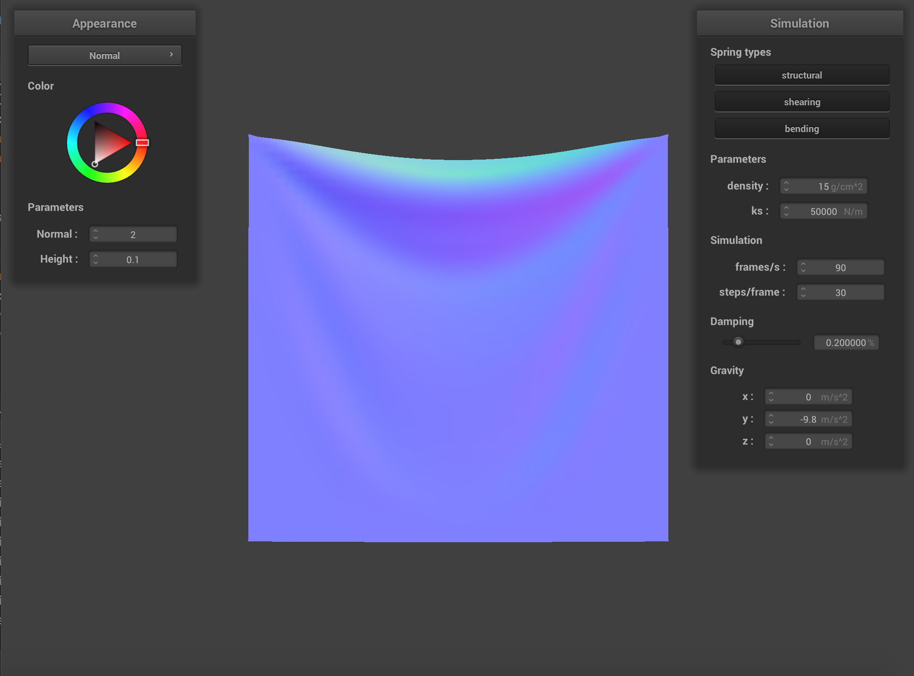

Part 1
General structure of point masses and springs.
We first built a grid of (num_height_points) by (num_width_points) point masses that filled a grid with a fixed
width and height. We evenly spaced out the point masses horizontally and vertically and marked some as pinned if it
was in the vector of pinned masses. We then connected all the point masses using springs. For all the masses in the
grid, we connected a structural spring between a point mass and the point mass to its left as well as the point mass
above, a shearing spring between a point mass and the point mass to its diagonal upper left and its diagonal upper
right, and a bending spring between a point mass and the point mass 2 to its left as well as 2 to its right. We
then stored all the point masses and springs in vectors.
| without any shearing constraints |
with only shearing constraints |
with all constraints |
|
 |
|
Part 2
For this part, we wanted to figure out how our clothes moved from one step to the next. We first calculated the net
force on each mass by accounting for all the external forces (like gravity) and spring forces being acted on the point
mass. We then used Verlet integration to calculate how the point mass position changes due to the forces. Finally, we
applied a spring length constraint based off the SIGGRAPH 1995 Provot paper where we made sure the spring length
between any 2 point masses never exceeded 10% greater than its rest length at any given time step.
Ks adjusts the force the spring must have be at correct the rest_length
| ks = 500 |
ks = 5000 |
ks = 50000 |
|
|
 |
| lower ks to introduce more stretch, takes awhile to reach the final resting postin |
less stretch but is not entirely stiff |
higher ks makes the cloth appears stiffer and does not have as much adjusting time when getting to the final
resting position |
damping is the calculation of energy loss, it is impactful on how the cloth falls and changes the waves and folds in the cloth
| damping = 0 |
damping = 1 |
|
|
| cloth appears to be "springy" and full of movement, takes awhile to adjust, many small waves and bumps |
cloth gracefully falls and drapes, not much adjusting, rather smooth |
density adjusts the weight of a cloth, we can see a change in density mainly adjusts the waves and folds in the cloth
| density = 1 |
density = 50 |
|
|
| there are noticeably less folds in the cloth |
more folds and a deeper "scoop" in the center draping |
final resting state of cloth
Part 3
We added support for our cloth colliding with other objects. We first implemented how our point masses collide with
spheres. To do that, if a point mass intersects or is inside the sphere, we find the nearest intersection point where
it is extended to the surface of the sphere. We then calculate the correction vector needed to move the point mass to
that intersection and apply it to the point mass after scaling it down by friction. After this step, we have a cloth
that will wrap around a sphere realistically when falling on top of it instead of going directly through. The next
part was implementing how our point mass collides with planes, such as the ground. Like the previous step, if the
point mass is inside the plane, we calculate the intersection point where the point mass is on the surface of the
plane. We then find the correction vector needed to move the point mass to the surface and apply it to the point
mass’s position while also factoring in a surface offset and friction. After this step, when a cloth is dropped flat
to the ground, it should just stop and lay there flatly.
final resting state on the sphere
As stated before, Ks adjusts the force the spring must have be at correct the rest_length. This is emphasized when
draping over the sphere, mainly we can see the change in how far the cloth continues to drape from the sphere.
| ks = 500 |
ks = 5000 |
ks = 50000 |
|
|
|
| the cloth seems extremely stretched and deformed, this is because with such a small ks it takes less force
to make it stretch |
the cloth appears to keep its shape but also does not seem extremely ridgid |
the cloth seems extremely stiff and keeps it shape, with a large ks it takes a lot of force to make the cloth deform |
resting state on the plane

Part 4
For this part, we implemented how the cloth handles self collision. Without this, when a cloth falls, it would cut
into itself. We first divide the 3D box volume of the scene into multiple smaller 3D boxes. We then iterate through
all the point masses and hash all point masses that lie in a specific small 3D box to an unique key value in a hashmap.
We want to build this hashmap of hashed point masses at each timestep, which will allow us to more efficiently compute
the self collisions within the cloth. To do that, we iterate through all point masses (pm_i), get the 3D box it's
associated with, and all the other point masses in that box (pm_j). If pm_i and pm_j are within 2 * thickness apart
and pm_i and pm_j are different point masses, we want to compute the correction vector that will be applied to pm_i.
We then add up all the correction vectors associated with pm_i and apply it to update its position, while scaling it
down by the number of simulation points. After this step, when we let a cloth drop, it should fall realistically and
not cut into itself.
document how the cloth falls and folds on itself
As previously stated, density adjusts the weight of a cloth, when folding can see a change in density mainly adjusts the amount/frequency of waves and folds in the cloth
| density = 1 |
| the cloth noticeably has bigger "folds" and seems more rigid, it forms a larger mass in the final folding |
|
|
|
| density = 50 |
| the cloth has many more ripples and folds, it appears to take up a smaller amount of area when folding |
|
|
 |
As stated before, Ks adjusts the force the spring must have be at correct the rest_length. This is emphasized when
draping over the sphere, mainly we can see the change in how far the cloth continues to drape from the sphere.
| ks = 500 |
| there appears to be many ripple and many small folds |
|
|
|
| ks = 5000 |
| there are larger folds but the texture of the cloth seems rather rippled and bumpy |
|
|
|
| ks = 50000 |
| the cloth seems smoother and has larger more even folds |
|
|
|
Part 5
A shader program is a program that tells the computer how to render each pixel. It runs some parts of the graphics
pipeline by taking in vertices in 3D space and outputting a color. Vertex shaders take in vertices and out the
transformed versions after modifying their geometric properties. Fragment shaders take in the geometric properties
we calculated in vertex shaders and use to compute the color value at a specific point sampled from the texture.
For Blinn-Phong shading, the model was similar to the diffuse shading model except it took in an ambient light
component as well as a specular reflection component to diffuse the light too. To calculate the ambient light
component, we chose our own values to compute with. For the diffuse component, we multiplied a diffuse coefficient
with the illumination from the light source and with the max(0, dot product of normal vector and incoming light
vector). For the specular reflection component, we multiplied a specular coefficient with the illumination from the
source and with thee max(0, dot product of normal vector with vector that is alpha away) raised to the power of a
constant we initialized. We finally add them all together to get the reflected light value and apply that to the
color we want to output of the fragment shader.
| only ambient component |
only diffuse component |
|
|
| only specular component |
Entire Blinn-Phong model |
|
|
Custom texture
bump
For this part, we implemented 5 different shaders: Diffuse, Blinn-Phong, Texture mapping, Bump & Displacement, and
Mirror. For each of these, we calculated how the different textures would account for the light coming in being
reflected differently based on the material we were using. We multiplied the light reflected out with the color input
of a specific coordinate to get the new color reflected out.
For our bump mapping, the reason it looks off is because we used vectors4D throughout our calculations instead of
vectors3D. This may have led to inconsistencies as we performed vector operations that we were not able to debug. For
example, since dot and cross operations only supported vectors3D, we filled in the last value ourselves to make it a
vector4D, which could have led to further wrong calculations. Our output looks lighter than it should be although the
bumps appear on the surface.
Mirror